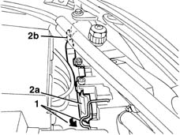
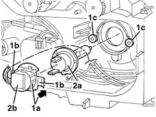
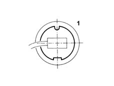

5540B25 dipped headlamp beam (1), lh or rh - r r
- Path
- Procedures > 55 ELECTRICAL EQUIPMENT > 5540 EXTERIOR LIGHTING > 5540B headlamps > 5540B25 dipped headlamp beam (1), lh or rh - r r
- Kind
- repair procedure (removal / refitting; the operation number is the code)
- Applies to
- all engines; all production periods
- Interactive page
- https://sloeber94.github.io/elrnDB-lYpsln/en/#/2429409
Applies to: all engines; all production periods
 Removing
Removing
 Refitting
RefittingOpen the bonnet lid.
1. Turn the cover retainer.
2. Remove cover (2a), releasing the retainers (2b).

Applies to: all engines; all production periods
1. Turn bulb holder (1a), releasing tabs (1b) from retainers (1c), then remove the bulb holder with bulb.
2. Remove bulb (2a) from bulb holder (2b).

Applies to: all engines; all production periods
Refitting
RemovingCheck the condition and the cleanliness of the lamp.
1. Fit the bulb in the bulb holder and fit the bulb holder by engaging the tabs in the retainers. Correct bulb position is shown in the figure.

Applies to: all engines; all production periods
Refit the cover correctly, exerting pressure to the centre of it, until a click is heard. Check that it is secure.
Reposition the cover retainer.
Check the operation of the bulb.